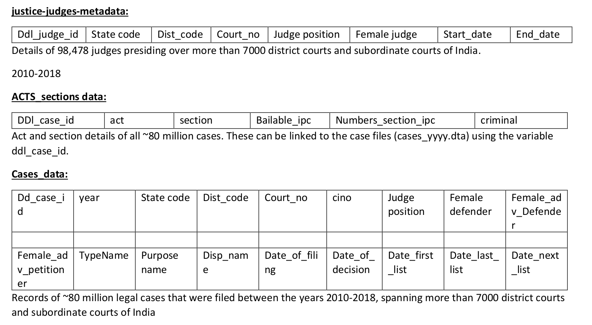
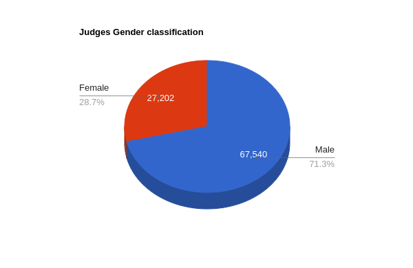
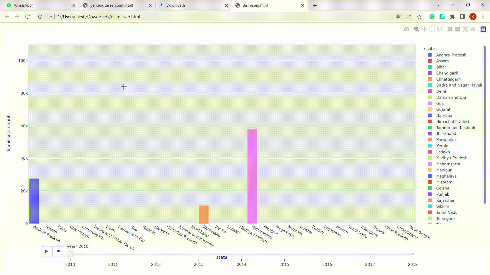
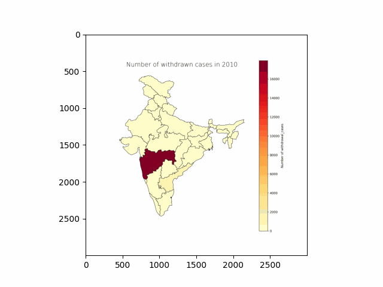
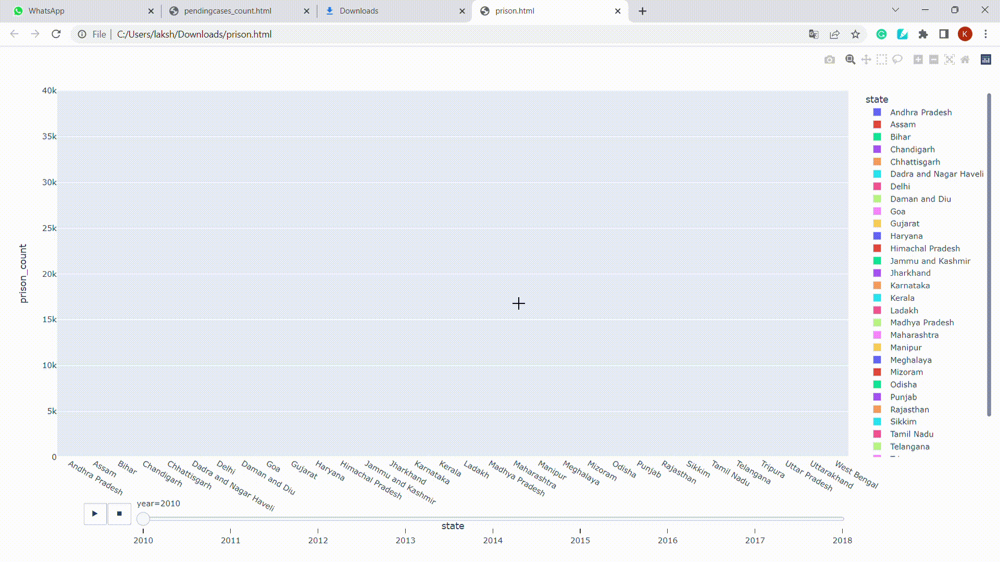
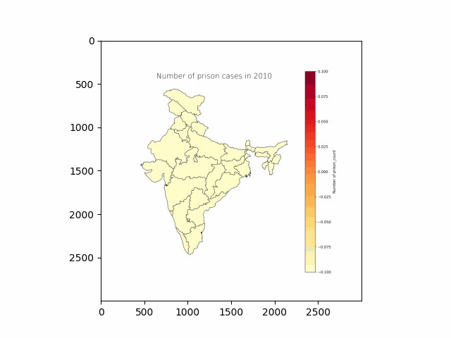
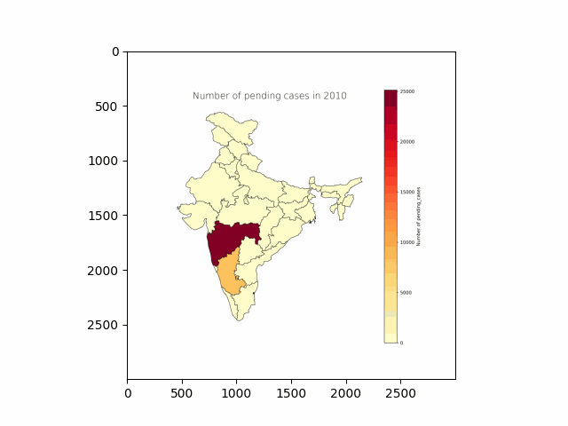

![smiley]()
Note : Please read this document with internet connection
An open-access dataset of 80 million Indian legal case records
For this dataset in order to understand the terms in judicial system i met a lawyer according to the given definitions of each term by her i did this analysis
The given datset contains 80 million case records normally its too large but when compared to the years its not that much high. We know each case have their own story and own problem and justice.soo sad, But we don't need all these things to analyse the data. so lets move on to the datset..
This report presents an analysis of court data collected by the Data Developement lab. The dataset includes information on over 80 million court cases filed in the India between 2010 and 2018. It includes variables such as the case type, the disposition of the case, the length of the case, and the number of defendants,number of petitioners. The goal of this analysis is to examine trends in the court system and identify patterns in the data that may provide insight into the functioning of the courts. The report also attempts to identify any limitations of the dataset, which could be useful for further research on this topic.

In the given dataset, we have details about judges,information about cases from 2010 to 2018 and acts/sections used to solve that case, Here are the variables
Note that i focused mainly on dismissed cases, criminal cases, prison cases and withdrawn cases, pending cases because these type of cases are highly effecting the judicial system mainly judges.
Iam trying to follow these steps
Identify the data sources: The data sources for judiciary data obtained from Data developement lab
Assess the data: Assessing the data involves examining the structure, contents, and quality of the data. This includes looking for missing or incomplete data, checking for data accuracy and consistency, and verifying the data formats.
Clean and transform the data: Cleaning and transforming the data involves removing any unnecessary information, correcting any errors, and transforming the data into a format that can be used for analysis. This includes standardizing data formats and eliminating outliers.
Analyze the data: Analyzing the data involves using statistical and machine learning techniques to identify patterns and insights in the data. This includes visualizing the data to gain insights and using predictive models to make future predictions.
Present the results: Presenting the results involves summarizing the findings and presenting them in a way that is easy to understand. This can involve creating charts, graphs, and tables to summarize.

Now move on to the most awaiting moment------->
Before going to the analysis just try to make sure which type of data i am giving through this like I analysed total how many dismissed cases from 2010 to 2018 how is this varying from 2010 to 2018 and also i analsysed data about prison judgement, criminal cases, non criminal cases , withdrawal cases and total cases. and I analysed the judges data like in each state how many judges are there from 2010 to 2018 and what is the ratio of male and female judges.
Let's start with the judges data from the below graphs we can get the idea of how many judges in andhrapradesh and telangana from 2010 to 2018 and their average service time in every year
Below graph shows percentage of male and female judges
Its shows male judges higher than the female judges but if we consider years female judges are going to approximately equal to the male judges
Lets see total judges,and compare male and female judges with total judges using graph
This is the dismissed cases variation from 2010 to 2018 in every state in india.
click here to see perfect view of this graph
change from 2010 to 2018


Here red line represents dismissed cases andd blue line represents total cases in every year
In order to get clear information we need more appropriate way to show data so here is the visualized data using map.

From this data we can see dismissed cases count has enormously increased in 2013 but by the end of 2018 it decreased.
In india because of various reasons people withdrawing cases after filing reasons like compromise between petitioner and defendent or other reasons.
Here we have data how this withdrawing cases has changed from 2010 to 2018

click here to get better view in webpage
How its changing from 2010 to 2018.....


In order to get clear information we need more appropriate way to show data so here is the visualized data using map.
 From these graphs we can see that in 2013 there are high range of withdrawal cases so might be there a one reason for this may be political issues or other type of issues in society and family
In judiciary system there are various type of cases one of them is criminal cases, In this datset there are 65 million criminal cases according to data developement lab report. So, now lets see criminal cases increased or decreased every year from 2010 to 2018

How it is changing from 2010 to 2018 when compared to year and total cases in every year


From these graph we can assume that in earlier days means till 2011 most of the cases are criminal cases but later there are many type of cases like divorce cases,land cases, family cases etcc..
Every year in total cases there are many people going to prison as their final judgment because of severe cases. SO lets see how many cases have final judgemnt have prison as 1year or 2years etc..
To get the more clearer picture of this page click here
Lets see total number of cases vs every year and see how it is varying year by year.


Here blue line represents total cases and red line represnts prison cases
To get the more closer view by visualisation i used map plotting from 2010 to 2018
 From these visualizations we can say that when compared to the total cases prison judgemnet cases are lower but rapidly increased prison cases in 2016 and 2017 when compared to the previous years but slightly decreased in 2018 when compared to the 2017 may be this is becuase of some awarness among the people about driving, drinking or other type of normal cases. If these awarness increases then atleast 10% small type of cases will decreases
In any country , in any state pending cases are common in any court. Pending cases will raise due to increased number of cases or lack of evidence or judges/ client not availbale to each other to deal the case or some financial issues.
Now lets see how many pending cases in every state from 2010 to 2018 in every year.

Now lets see graph which tells about year and pending cases.. and also comparison with total cases in every year.


By luck indian judicial system working hard so very few cases are pending in every year now lets see which state having higher pending cases
From these graph we can say that karnataka having higher number of pending cases. In the beginning maharashtra having higher pending cases but later pending cases count have been decreased gradually.
But in 2017 there are huge number of pending cases but later it was enormous decreased by the end of 2018
Till now we have total pendingcases, withdrawn cases, criminal cases, dismissedcases now lets see total cases becuase it is very important to see total when comparing other values.

Now lets see how many cases in India every year from 2001 to 2018.

This graph represents total cases count in every year.
Now lets see relation pendingcases,withdrawn cases, criminal cases, dismissed cases when compared with the total cases.

Now lets see count of pendingcases,withdrawn cases, criminal cases, dismissed cases when compared with the total cases using stacked bar.
Till now we have seen these grpah comparison with years from 2010 to 2018 now lets see each state every year in india from 2010 to 2018.

Finally total cases are incresing parlllely judges and other type of courts and cases are also increasing.
Now lets move on to the duration of cases here i took three types of durations
Here i divided time stages as 3 levels
Here i divided time stages as 3 levels
Here i divided time stages as 3 levels
Here iam giving average time it will take to complete the case
Here iam giving minimum and maximum days to complete case after filing in each state
If we see the final version of analysis we get an idea how this is related to population
I tried my level best by giving all my effort and finalized this data
wait....
wait.....
Here is the Insights of my Exploratory data analysis , classifier and also I included classification problem in this document.